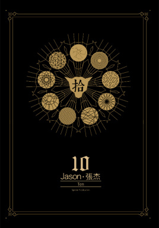

张杰的专辑
张杰的专辑拾》是张杰发行的典藏专辑，由沈永革和曲世聪参与制作。 该专辑共收录14首歌曲，于2015年4月15日发行。 2014年，张杰凭该专辑收录曲《剑心》获2014年度安徽卫视国剧盛典“观众喜爱电视剧歌曲”； 2015年，张杰凭该专辑收录曲《剑心》获得第22届东方风云榜音乐盛典“年度十大金曲奖”。 2016年，张杰凭该专辑收录曲《My Sunshine》获得第六届全球流行音乐金榜年度最佳电视剧主题曲、第23届东方风云榜音乐盛典十大金曲奖
| 张杰的专辑 |
|
|

拾》是张杰发行的典藏专辑，由沈永革和曲世聪参与制作。 该专辑共收录14首歌曲，于2015年4月15日发行。 2014年，张杰凭该专辑收录曲《剑心》获2014年度安徽卫视国剧盛典“观众喜爱电视剧歌曲”； 2015年，张杰凭该专辑收录曲《剑心》获得第22届东方风云榜音乐盛典“年度十大金曲奖”。 2016年，张杰凭该专辑收录曲《My Sunshine》获得第六届全球流行音乐金榜年度最佳电视剧主题曲、第23届东方风云榜音乐盛典十大金曲奖 |
|
| 杨长雄©2020.6.9 | |